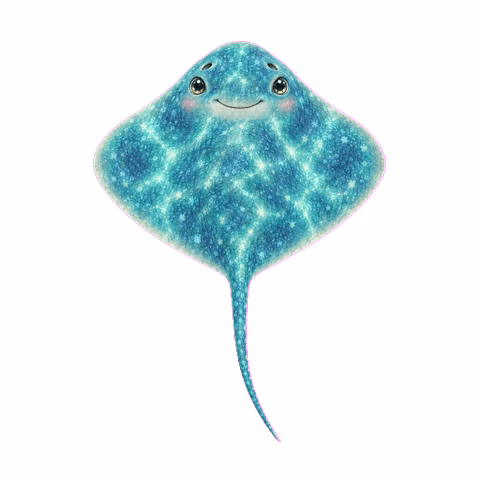

Stay hydrated. Stingrays are happy.
A free little macOS menu-bar app. Rayna fills up as you drink and swims in with a friendly nudge when it's time for another glass.
View source on GitHub →Animated preview (a mock-up of the app, not a screen recording).
Rayna-2.2.0.dmg and drag Rayna into Applications.Rayna is a universal app for Apple silicon and Intel Macs. Prefer to build it yourself? Instructions are on GitHub.